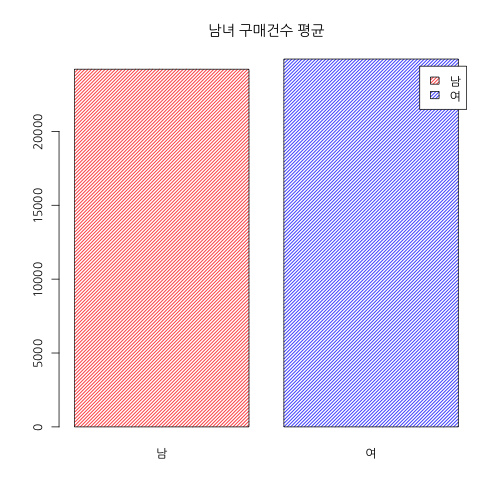

- 데이터 : 총 15개 업종의 1년치 구매건수 (가상의) 데이터
- 월 * 업종 * 성별 * 요일의 변수가 존재
학습 목표 : 엑셀 기능들을 R로 구현하여 자동화 하기
- 데이터 불러오기
- 데이터 편집하기
- 그룹별로 평균 구하기
- 그래프 그리기
김형준
Analytic Director / (주) 퀀트랩 / kim@mindscale.kr
## 매출월 요일 점포 성별 구매건수
## 1 1월
## 2
## 3 1 월 a 남자 21451
## 4 1 화 b 여 24922
## 5 1 수 c 남자 8835
## 6 1 목 d 여 13720
## 매출월 요일 점포 성별 구매건수
## 213 2월
## 214
## 215 2 월 a 남자 43421
## 216 2 화 b 여 13416
## 217 2 수 c 남자 24219
## 218 2 목 d 여 20317
#df <- read.csv("data/sales.csv")
df <- read.csv("data/sales.csv", fileEncoding = "CP949")
df <- read.csv("data/sales.csv", fileEncoding = "CP949", stringsAsFactors=T)
str(df)
## 'data.frame': 2544 obs. of 5 variables:
## $ 매출월 : Factor w/ 25 levels "","1","10","10월",..: 9 1 2 2 2 2 2 2 2 2 ...
## $ 요일 : Factor w/ 8 levels "","금","목","수",..: 1 1 5 8 4 3 2 7 6 5 ...
## $ 점포 : Factor w/ 16 levels "","a","b","c",..: 1 1 2 3 4 5 6 7 8 9 ...
## $ 성별 : Factor w/ 3 levels "","남자","여": 1 1 2 3 2 3 2 3 2 3 ...
## $ 구매건수: int NA NA 21451 24922 8835 13720 10826 43319 2471 10457 ...
x <- c("A", "B", "C")
y <- c(1, 1, 3)
str(x)
## chr [1:3] "A" "B" "C"
str(y)
## num [1:3] 1 1 3
y == 1
## [1] TRUE TRUE FALSE
y == 3
## [1] FALSE FALSE TRUE
y == 2
## [1] FALSE FALSE FALSE
y[y == 1]
## [1] 1 1
y[y == 2]
## numeric(0)
y[y != 1]
## [1] 3
xy <- data.frame(x, y)
xy
## x y
## 1 A 1
## 2 B 1
## 3 C 3
xy[1, ] ## xy에서 1행 전체
xy[2, ] ## xy에서 2행 전체
xy[, 1] ## xy에서 1열 전체
xy[, 2] ## xy에서 2열 전체
xy
## x y
## 1 A 1
## 2 B 1
## 3 C 3
xy[1, 1] ## xy 에서 1행, 1열
xy[1:3, 1] ## xy 에서 1행 ~ 3행, 1열
xy[1:3, 1:2] ## xy 에서 1행 ~ 3행, 1열 ~ 2열
xy[1:2, ] ## xy 에서 1행 ~ 2행, 1열 ~ 2열
xy[1:2, -1] ## xy 에서 1행 ~ 2행, 1열 제외
xy[-c(1,3), ] ## xy 에서 1행, 3행 제외, 1열
df <- read.csv("data/sales.csv", fileEncoding = "CP949", stringsAsFactors=F)
str(df)
## 'data.frame': 2544 obs. of 5 variables:
## $ 매출월 : chr "1월" "" "1" "1" ...
## $ 요일 : chr "" "" "월" "화" ...
## $ 점포 : chr "" "" "a" "b" ...
## $ 성별 : chr "" "" "남자" "여" ...
## $ 구매건수: int NA NA 21451 24922 8835 13720 10826 43319 2471 10457 ...
df[,"성별"] == "남자"
df[df[, "성별"] == "남자", "성별"] <- "남"
df[1:5, 1]
## [1] "1월" "" "1" "1" "1"
df[1:5, "매출월"]
## [1] "1월" "" "1" "1" "1"
df$매출월[1:5]
## [1] "1월" "" "1" "1" "1"
df[1:5, 1] == "1월"
## [1] TRUE FALSE FALSE FALSE FALSE
df[1:5, "매출월"] == "1월"
## [1] TRUE FALSE FALSE FALSE FALSE
df$매출월[1:5] == "1월"
## [1] TRUE FALSE FALSE FALSE FALSE
man <- df[df[,"성별"] == "남", ]
man <- subset(df, 성별 == "남")
woman <- subset(df, 성별 == "여")
man.mean <- mean(man$구매건수)
woman.mean <- mean(woman$구매건수)
barplot(c(man.mean, woman.mean))

barplot(c(man.mean, woman.mean),
names.arg = c("남", "여"),
main = "남녀 구매건수 평균")

barplot(c(man.mean, woman.mean),
names.arg = c("남", "여"),
main = "남녀 구매건수 평균",
col = c("red", "blue"))
barplot(c(man.mean, woman.mean),
names.arg = c("남", "여"),
main = "남녀 구매건수 평균",
col = c("red", "blue"),
density = 30)

barplot(c(man.mean, woman.mean),
names.arg = c("남", "여"),
main = "남녀 구매건수 평균",
col = c("red", "blue"),
density = 30,
legend = c("남", "여"))

man.5 <- subset(df, 매출월 == 5 & 성별 == "남")
man.5.mean <- mean(man.5$구매건수)
woman.5 <- subset(df, 매출월 == 5 & 성별 == "여")
woman.5.mean <- mean(woman.5$구매건수)
barplot(c(man.5.mean, woman.5.mean),
names.arg = c("남", "여"),
main = "5월 남녀 구매건수 평균 비교",
col = c("red", "blue"),
density = 30,
legend = c("남", "여"))

월 <- subset(df, ??? == ?)
화 <- subset(df, ??? == ?)
수 <- subset(df, ??? == ?)
목 <- subset(df, ??? == ?)
금 <- subset(df, ??? == ?)
토 <- subset(df, ??? == ?)
일 <- subset(df, ??? == ?)
월mean <- ???
화mean <- ???
수mean <- ???
목mean <- ???
금mean <- ???
토mean <- ???
일mean <- ???
barplot(???,
names.arg = c("월", "화", "수", "목", "금", "토", "일"),
main = "요일별 구매건수 평균 비교",
col = rainbow(7),
density = 30,
legend = c("월", "화", "수", "목", "금", "토", "일"))
평일 <- subset(df, ??? == ?) ### "==" 사용? "%in%" 사용?
주말 <- subset(df, ??? == ?)
평일mean <- ???
주말mean <- ???
barplot(???, col = ???, legend = ???, density = ???)
title(main = ???)
paste(5, "월")
## [1] "5 월"
paste(5, "월", sep="")
## [1] "5월"
sprintf("%d%s", 5, "월")
## [1] "5월"
sprintf("%02d%s", 5, "월")
## [1] "05월"
for (i in 1:5)
{
print(i)
}
## [1] 1
## [1] 2
## [1] 3
## [1] 4
## [1] 5
for (i in 1:5)
{
print(paste(i, "월"))
break
}
## [1] "1 월"
for (i in 5:9)
{
man <- subset(df, 매출월 == i & 성별 == "남")
man.mean <- mean(man$구매건수)
woman <- subset(df, 매출월 == i & 성별 == "여")
woman.mean <- mean(woman$구매건수)
png(filename = sprintf("%d%s", i, ".png"))
barplot(c(man.mean, woman.mean),
names.arg = c("남", "여"),
main = paste(i, "월 남녀 구매건수 평균"),
col = c("red", "blue"),
density = 30,
legend = c("남", "여"))
dev.off()
}
df <- df[df[,"매출월"] %in% 1:12,]
df[,"매출월"] <- as.numeric(df[,"매출월"])
df.first <- subset(df, 매출월 <= 6 )
mean(df.first$구매건수)
## [1] 24601.29
df.latter <- subset(df, 매출월 > 6 )
mean(df.latter$구매건수)
## [1] 24504.51
sale.month <- split(df, df$매출월)
for (i in 1:2)
{
print(mean(sale.month[i][[1]]$구매건수))
}
## [1] 24347.91
## [1] 25708.4
sapply(sale.month, function(x) mean(x$구매건수))
## 1 2 3 4 5 6 7 8
## 24347.91 25708.40 25529.28 25247.96 23154.91 23619.28 25220.08 24482.36
## 9 10 11 12
## 23920.19 24190.30 24923.86 24290.30